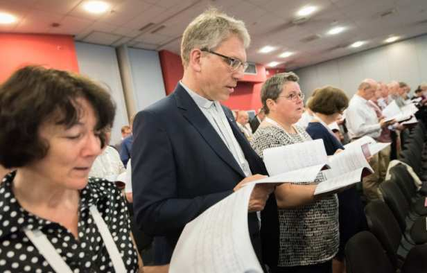
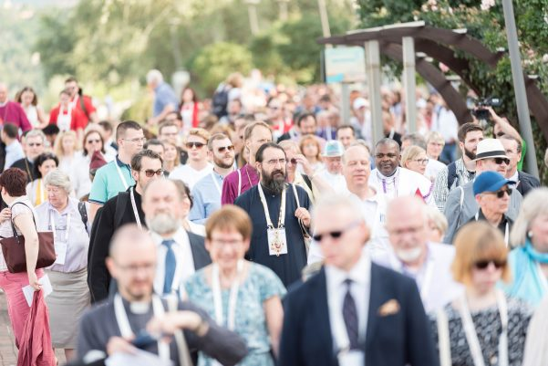
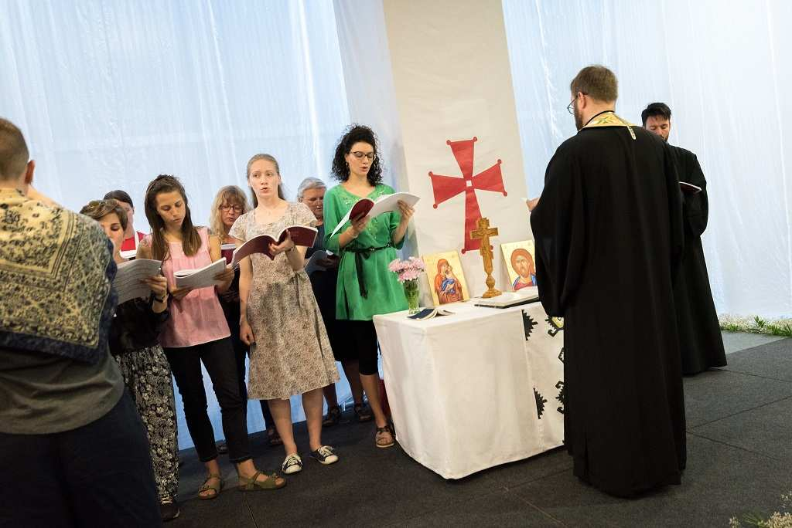

: Despre eretici și erezie")
")
: Să privim pe episcop ca pe Domnul Însuși și să fugim de cei ce poartă numele cu viclenie")


")
{kind=link}
{kind=link}
În perioada 31 mai – 6 iunie 2018 Patriarhia Serbiei alături de alte 3 grupări sectare[1] a găzduit la Novi Sad a 15-a Adunare Generală a Conferinței ”bisericilor” Europene (C.E.B.) cu genericul ”Îmi veți fi Mie martori” [destul de reprezentativ mesaj pentru super-biserica lui antihrist] avînd drept subiect de discuție conceptele de mărturie, justiție și ospitalitate. La acest mare sabat ecumenist au luat parte peste 400 de delegați, reprezentanți ai bisericilor ecumeniste din toată Europa.
 Adunarea Generală este cel mai înalt organism de conducere al Conferinței ”bisericilor” Europene, care ia decizii importante și stabilește direcțiile viitoare pentru activitatea forului. Conferința
Adunarea Generală este cel mai înalt organism de conducere al Conferinței ”bisericilor” Europene, care ia decizii importante și stabilește direcțiile viitoare pentru activitatea forului. Conferința bisericilor Europene [echivalentul european al Consiliului Mondial al bisericilor, CMB] este alcătuită din 116 biserici Ortodoxe, Protestante, Anglicane și Vechi-Catolice din întreaga Europă, la care se adaugă peste 40 de consilii naționale bisericești și organizații partenere. Fondată în 1959, instituția are sedii în Bruxelles și Strasbourg.


Patriarhia Română este membră a Conferinței Europene din 1964, cînd a avut loc cea de-a 4-a Adunare Generală (în Marea Baltică, pe vasul „M. V. Bornholm”). Din partea Patriarhiei Române în 2018 au participat: Iosif Pop, minciuno-mitropolitul român al Europei Occidentale și Meridionale, pseudo-preotul Sorin Șelaru, pseudo-preotul Constantin Jinga și Gabriela Pipirig.
Patriarhia Moscovei (PM) nu a participat anul acesta, după ce la 11 octombrie 2008 a declarat suspendarea participării în CEB, nu datorită naturii eretice a convenției, ci din cauza nedorinței CEB de examinare a cererii de aderare a Bisericii Ortodoxe autonome a Estoniei, partea aflată sub jurisdicția PM. Trebuie menționat că Patriarhia Moscovei a participat activ la crearea CEB. Alexie al II-lea (Rüdiger, 1929-2008), precedentul pseudo-patriarh al Moscovei și a întregii Rusii, a fost ales în 1964 președintele CEB, pe atunci mitropolit, iar la Adunările Generale ulterioare a fost reales președinte. La 26 martie 1987 a fost ales președinte al Prezidiumului și Comitetului consultativ al CEB.
{kind=link}

În deschiderea întrunirii, pe 31 mai 2018, pseudo-patriarhul Irineu (Gavrilovici) le-a urat tuturor un Bun Venit! din numele Patriarhiei Sîrbe, amintindu-le participanților de drama creștinilor din Kosovo ce au fost izgoniți din casele lor din cauza conflictului militar, iar astăzi sunt uciși dacă vor să se întoarcă înapoi. A mai menționat și importanța întrunirii ereticilor de toate tipurile: ”Lumea se află în situația în care oamenii din Europa și din întreaga lume așteaptă ca Biserica [care anume? baptistă, evanghelistă sau ecumenistă? – n.red.] să-și ridice glasul contra manifestărilor negative din vremea noastră, din lumea noastră. Această voce este așteptată și ea trebuie să răsune și să fie auzită.”

În calitate de gazdă a locului, pseudo-episcopul Irineu (Bulovici) de Bacika, de altfel participant la sinodul tîlhăresc din Creta, deși nesemnatar al documentului ”Relațiile Bisericii Ortodoxe cu restul lumii creștine” conform propriei mărturii, a evidențiat că Novi Sad e o ”mică Europă” în care conviețuiesc 25 de etnii diferite, ”o majoritate ortodoxă sîrbă, confesiuni catolice sau protestante, iar alături de locașurile de cult creștine în capitala provinciei Voivodina se află o sinagogă și o moschee”. A mai reflectat și asupra faptului de ce anume Serbia a fost aleasă pentru întrunirea Adunării Generale: ”Acesta-i un moment solemn și îmbucurător și pentru faptul că țara noastră, Serbia, mereu a fost la granița Răsăritului și Apusului, iar acum a primit ocazia să-și împlinească chemarea multiseculară – să devină loc de întîlnire, dialog și colaborare între biserici și culturi”.
În aceeași zi a deschiderii în cadrul CEB a avut loc o întrunire bilaterală între delegația ”ortodoxă” și reprezentanții anticalcedonenilor (monofiziți și monoteliți).
 Întrunirea a fost condusă de Cleopa Stongylis, pseudo-mitropolitul Suediei și a toată Scandinavia (Patriarhia Ecumenică), care a cerut participanților să reflecte împreună la provocările cu care ne confruntăm în lumea modernă și la care putem răspunde doar prin elaborarea împreună a unei poziții comune.Pseudo-mitropolitul Tallinnului și a întregii Estonii[2], Stefan Haralambidis, a cerut să se refere la documentele așa-numitului ”Sfîntului și Marelui Sinod al Bisericii Ortodoxe” [sinodul tîlhăresc desfășurat în Creta, iunie 2016] care sunt fundamentul mărturiei ortodoxe în lume. A menționat și faptul că în ciuda tuturor contradicțiilor și discuțiilor la Sinod în jurul documentului ”Relațiile Bisericii Ortodoxe cu restul lumii creștine”, acum ne-am adunat la Novi Sad la Adunarea Generală a CEB și ”orișicine ar fi împotrivă, dar acum suntem aici… și în sfîrșit putem da mărturie împreună”.
Întrunirea a fost condusă de Cleopa Stongylis, pseudo-mitropolitul Suediei și a toată Scandinavia (Patriarhia Ecumenică), care a cerut participanților să reflecte împreună la provocările cu care ne confruntăm în lumea modernă și la care putem răspunde doar prin elaborarea împreună a unei poziții comune.Pseudo-mitropolitul Tallinnului și a întregii Estonii[2], Stefan Haralambidis, a cerut să se refere la documentele așa-numitului ”Sfîntului și Marelui Sinod al Bisericii Ortodoxe” [sinodul tîlhăresc desfășurat în Creta, iunie 2016] care sunt fundamentul mărturiei ortodoxe în lume. A menționat și faptul că în ciuda tuturor contradicțiilor și discuțiilor la Sinod în jurul documentului ”Relațiile Bisericii Ortodoxe cu restul lumii creștine”, acum ne-am adunat la Novi Sad la Adunarea Generală a CEB și ”orișicine ar fi împotrivă, dar acum suntem aici… și în sfîrșit putem da mărturie împreună”.
{kind=link}
{kind=link}
{kind=link}
{kind=link}
 Gavriil Papanikolau, pseudo-mitropolitul Noii Ionii și Filadelfiei, a vorbit despre rezultatele consultării interortodoxe de la Paris de pe 19 aprilie 2018 și despre comunicatul emis atunci, în care se confirmă că ”chestiunea centrală pentru bisericile ortodoxe, precum și pentru munca de integrare, este preocuparea pentru persoana umană, demnitatea umană și protecția drepturilor omului pentru refugiați și imigranți”. Conform cuvintelor lui, acestea și sunt punctul de pornire pentru discutarea temelor de mărturie, justiție și ospitalitate la Adunarea Generală.
Gavriil Papanikolau, pseudo-mitropolitul Noii Ionii și Filadelfiei, a vorbit despre rezultatele consultării interortodoxe de la Paris de pe 19 aprilie 2018 și despre comunicatul emis atunci, în care se confirmă că ”chestiunea centrală pentru bisericile ortodoxe, precum și pentru munca de integrare, este preocuparea pentru persoana umană, demnitatea umană și protecția drepturilor omului pentru refugiați și imigranți”. Conform cuvintelor lui, acestea și sunt punctul de pornire pentru discutarea temelor de mărturie, justiție și ospitalitate la Adunarea Generală.
{kind=link}
Reprezentantul Patriarhiei Serbiei, Porfirie Perici, pseudo-mitropolit de Zagreb și Liubliana, a evidențiat marea importanță a unității și comuniunii. Anume ideea de comuniune, ”koinonia”, trebuie să devină mesajul și mărturia Bisericii în lume, adînc scufundată în individualism: ”Biserica este prin natura sa o comuniune; noi putem duce mărturia acestei comuniuni în lume. Biserica este o comunitate și ea este deschisă să discute problemele lumii contemporane”.
Emanuil Adamakis, pseudo-mitropolitul Galiei (Patriarhia Ecumenică), și Arhiepiscopul Eznik Petrosean al bisericii Armene au informat audiența despre dialogul dintre cele ”două familii ale Bisericii Ortodoxe”. Arhiepiscopul Eznik a recunoscut: ”Noi trăim în secolul XXI și suntem despărțiți din cauza a ceea ce s-a petrecut în secolul V… Eu cred că înțelegerile noastre diferite asupra naturii lui Hristos nu trebuie să fie un obstacol pentru unitatea bisericii”.
Pseudo-mitropolitul Emanuil, care este și co-președinte al dialogului cu anticalcedonienii (fals numiți ”orientali ortodocși”), și-a exprimat convingerea că acest dialog este unul din cele mai încurajatoare și are cu siguranță viitor.
{kind=link}
A doua zi, 1 iunie, a început cu o împreună-rugăciune în stil luteran în sala de conferințe în fața unui altar improvizat, unde a luat parte și actualul președinte al CMB, Olav Fykse Tveit.
 A 3-a zi, 2 iunie, a fost deschisă de o utrenie săvîrșită la altarul ecumenist de reprezentanții armeni în ritul armenesc, cărora li s-au alăturat și copții cu corul lor de diaconițe. Această horă babiloniană au continuat-o cu un cor comun ecumenist al tuturor confesiunilor ”creștine”.
A 3-a zi, 2 iunie, a fost deschisă de o utrenie săvîrșită la altarul ecumenist de reprezentanții armeni în ritul armenesc, cărora li s-au alăturat și copții cu corul lor de diaconițe. Această horă babiloniană au continuat-o cu un cor comun ecumenist al tuturor confesiunilor ”creștine”.
{kind=link}
Participant la sinodul tîlhăresc din Creta, Constantin Miron, pseudo-preot al bisericii ”Adormirea Maicii Domnului” din Köln (Patriarhia Ecumenică), a prezentat traducerea în germană a documentelor pseudo-sinodului din 2016.
{kind=link}
{kind=link}
”În secolul XXI nu mai putem ignora realitatea caracterului ecumenic al Bisericii Ortodoxe – atît în ce privește existența ei în lume, nu doar ca o biserică de Răsărit, ci și în sensul dialogului intercreștin”, a declarat pseudo-preotul Constantin Miron, ce a fost consilier în delegația Patriarhiei Ecumenice la Creta, iar la Adunarea Generală slujea în Comitetul Serviciului Divin.
{kind=link}
”Cînd mergem cu trenul, cîteodată avem nevoie să ne uităm prin geam, să ne mai uităm la ceasurile noastre, ca să înțelegem unde ne aflăm – am ajuns deja la stația următoare sau poate că întîrziem, trebuie să înțelegem unde ne aflăm și unde mergem. Anume asta a și făcut Marele și Sfîntul Sinod pentru călătoria Sfintei Bisericii noastre Ortodoxe și, într-o oarecare măsură, pentru întreaga creștinătate”, a continuat acesta.
Colegul său din Polonia, pseudo-pr. Andrei Cuzima, profesor de patrologie în Varșovia, s-a exprimat că ”însuși evenimentul Sinodului are o importanță extraordinară. După numărul episcopilor participanți la Sinod, acesta a fost cel mai important eveniment în Biserica Ortodoxă după secolul VIII”.
În calitate de observator ecumenist la sinodul tîlhăresc, Joris Vercammen, arhiepiscop al bisericii vechi-catolice, a menționat că ”ceea ce s-a petrecut la sinod are de-a face cu discuțiile teologice în Mișcarea Ecumenică și în Biserica Mondială. Asta e foarte urgent și foarte important, și noi avem nevoie de ortodocși”.
Sonila Rembeci, reprezentanta Bisericii Ortodoxe a Albaniei, a fost parte a delegației albaneze care a fost făcută intenționat cît mai diversă posibilă. În opinia ei, aceasta s-a făcut cu scopul de a demonstra că sinodul nu e o preocupare doar a ierarhiei bisericești, dar și al pleromei Bisericii și e martoră a caracterului său sinodal, deplin. Acest caracter sinodal continuă mai departe în procesul de receptare a lucrărilor sinodului. ”Documentele Sfîntului și Marelui Sinod sunt relevante. Noi le discutăm constant iarăși și iarăși, și încercăm să înțelegem conținutul lor mai bine și mai limpede”, a spus Rembeci, care apreciază faptul că au fost traduse în limba albaneză.
Stefan Haralambidis, pseudo-mitr. Tallinnului și a toată Estonia, unul din cei 161 de episcopi participanți la sinodul tîlhăresc din Creta, la Adunarea Generală a CEB s-a referit la documentele ”Sfîntului și Marelui Sinod” confirmînd că ele au o semnificație decisivă pentru mărturia ortodoxă în lume. În opinia lui, documentele nu sînt actuale prin ele însele și este insuficient dacă nu sînt puse și în practică.
{kind=link}
”Eu cred că noi trebuie, cu orice ocazie, să mărturisim precum, de exemplu, aici, că noi, ortodocșii, trăim în secolul XXI și aceasta este poziția noastră. Trebuie să fim consecvenți în ceea ce vorbim și în ceea ce facem” – a menționat el.
Mai tîrziu a recunoscut că una din cele mai delicate chestiuni în timpul dezbaterilor a fost legată de documentul ”Relațiile Bisericii Ortodoxe cu restul lumii creștine”, însă formularea găsită a ajutat la punerea în acord a pozițiilor diferite ale participanților sinodului și recunoașterea ”denumirilor istorice ale altor biserici creștine eterodoxe neaflate în comuniune cu Biserica Ortodoxă”.
Privitor la situația ecumenistă din propria eparhie, Haralambidis a fost de acord că ”astăzi, dialogul ecumenic în Estonia poate fi caracterizat drept pozitiv”, ”la noi sunt relații bune între biserici; la nivel de prietenie și de dialog suntem bravo”. Însă consideră că biserica trebuie să poarte mai multe discuții teologice și duhovnicești: ”Cel mai important e că putem fi prieteni. Dar în privința altor lucruri e mai complicat. Avem adunări comune, împreună-rugăciuni, discuții comune, dar sunt la un nivel foarte simplist. Avem nevoie de mai mult dialog teologic”.
{kind=link}
A 4-a zi a Adunării, 3 iunie, a fost dedicată împreună-rugăciunii ecumeniste pentru pace. Procesiunea s-a început în fața memorialului ridicat în cinstea victimelor atacului asupra Novi Sad în ianuarie 1942 de către trupele maghiare în al II-lea Război Mondial, în urma căreia au fost omorîți 1246 de civili, în principal sîrbi și evrei, a căror cadavre au fost aruncate în Dunăre.
Chiar și îngerii pictați și-au acoperit fața de rușine pentru mulțimea de ecumeniști ”ortodocși” înconjurați de eretici de toate tipurile posibile.
{kind=link}
{kind=link}
{kind=link}
{kind=link}
{kind=link}
 În încheierea procesiunii președintele CEB, anglicanul Christopher Hill, luterana Beate Fagerli (biserica Norvegiei), Helen Kesete (biserica ”ortodoxă” a Finlandei) și pseudo-arhimandritul Agathanghelos Siskos (Patriarhia Ecumenică) au sădit patru puieți de stejar lîngă podul Jejeliev, fiecare cîte unul.
În încheierea procesiunii președintele CEB, anglicanul Christopher Hill, luterana Beate Fagerli (biserica Norvegiei), Helen Kesete (biserica ”ortodoxă” a Finlandei) și pseudo-arhimandritul Agathanghelos Siskos (Patriarhia Ecumenică) au sădit patru puieți de stejar lîngă podul Jejeliev, fiecare cîte unul.
{kind=link}
4 iunie, a 5-a zi, s-a început cu o utrenie ortodoxă lîngă altarul ecumenist în fața căruia numai cine nu s-a rugat.
{kind=link}
Corul ortodox mixt a fost dirijat de finlandeza Jooa Sotejeff-Wilson (născută în 1981), angajată a Federației mondiale a studenților creștini, membră a mișcării ”ortodoxe” ”Syndesmos”, o lesbiană declarată ce se află în ”parteneriat înregistrat” cu altă femeie – Kate Sotejeff-Wilson.
{kind=link}
{kind=link}
Tot ea, în a doua zi a Adunării, s-a rugat în calitate de luterană și și-a acompaniat la harpă frații ecumeniști în timpul rugăciunilor lor de dimineață.
{kind=link}
Raportorul de bază în a 5-a zi a fost Antje Jackelén, ”arhiepiscopeasa” Uppsalei, prima femeie-”arhiepiscop” din istoria Suediei. Tema raportului a fost despre mărturisirea credinței de către femei, care adeseori sunt ignorate și nu li se aduce recunoștința necesară. Luînd drept exemplu un fragment din Evanghelia după Luca unde se vorbește despre 2 martori (Luca 24, 13), care de obicei se presupune că erau bărbați, iată că doar unul este numit pe nume – Cleopa, dar celălalt nu. Pe parcursul veacurilor s-a considerat că însoțitorul lui Cleopa era bărbat, dar ”nu mai puțin probabil că aceasta era soția lui, căci ei trăiau în aceeași casă” – a concluzionat ”arhiepiscopeasa”.
{kind=link}
În aceeași zi a fost ales noul președinte al CEB împreună cu doi vicepreședinți. Șeful Conferinței bisericilor Europene a devenit Christian Krieger, președintele bisericii Reformate din Alsacia și Lorena (Franța). Vorbind despre noua sa postură, el a menționat că are două scopuri de bază:
{kind=link}
”Primul scop vizează comunitatea Bisericilor din Europa. Eu vreau să le întăresc dialogul, interacțiunea lor. Al doilea scop ține de mărturia lor în Europa și pentru Europa pentru consolidarea muncii în problemele sociale și economice, problemele imigranților”.
{kind=link}
Vicepreședinții aleși sînt Cleopa Stongylis, pseudo-mitropolitul ”ortodox” al Suediei și a toată Scandinavia, care a spus că ”cel mai important aspect al activității noastre trebuie să devină munca ca un singur trup al lui Hristos pentru un viitor mai bun, pentru o Europă mai bună și în special pentru tineretul nostru”, și ”episcopeasa” anglicană de Loughborough, Gulnar Francis-Dehqani.
Aceasta a evidențiat: ”Prioritatea mea constă în a ajuta pe alții să rezolve problemele cu imigranții și cu migrația oamenilor în toată Europa”. Născută în Iran, ea din 2017 slujește în biserica Angliei în calitate de ”episcop” cu dorința declarată de a lucra cu culturile diferite și minoritățile etnice din eparhia sa.
În a 6-a zi, 5 iunie, anglicanii au dat tonul urgiei ecumeniste.
 La Adunare a vorbit Justin Welby, ”arhiepiscopul” primat al anglicanilor, care a făcut apel la activismul creștinilor și al bisericii în ansamblu: ”Biserica depășește limitele și hotarele, de parcă nici nu ar exista. Cei ce sunt în Hristos, Dumnezeu îi unește într-o familie, răspîndindu-se în toată lumea și trecînd peste granițele culturale, lingvistice, ecumenice sub îndrumarea Duhului care distruge orice ziduri, oricîte le-am ridica”.
La Adunare a vorbit Justin Welby, ”arhiepiscopul” primat al anglicanilor, care a făcut apel la activismul creștinilor și al bisericii în ansamblu: ”Biserica depășește limitele și hotarele, de parcă nici nu ar exista. Cei ce sunt în Hristos, Dumnezeu îi unește într-o familie, răspîndindu-se în toată lumea și trecînd peste granițele culturale, lingvistice, ecumenice sub îndrumarea Duhului care distruge orice ziduri, oricîte le-am ridica”.
 După 7 zile întregi de slujbe ecumeniste, audieri și instruiri, Adunarea Generală a Conferinței Bisericilor Europene întrunită la Novi Sad, Serbia, în 2018 s-a încheiat într-o slujbă de rămas bun, subliniind rolul speranței (anti)creștine pentru viitorul Europei.
După 7 zile întregi de slujbe ecumeniste, audieri și instruiri, Adunarea Generală a Conferinței Bisericilor Europene întrunită la Novi Sad, Serbia, în 2018 s-a încheiat într-o slujbă de rămas bun, subliniind rolul speranței (anti)creștine pentru viitorul Europei.

[1] ”Biserica” creștină reformată din Serbia și Muntenegru, biserica evanghelică slovacă de mărturisire de Augsburg din Serbia și biserica metodistă unită din Serbia.
[2] Biserica Ortodoxă a Estoniei, autonomă în cadrul Patriarhiei Ecumenice
Colecția foto a evenimentului ecumenist pe Flickr și site-ul evenimentului